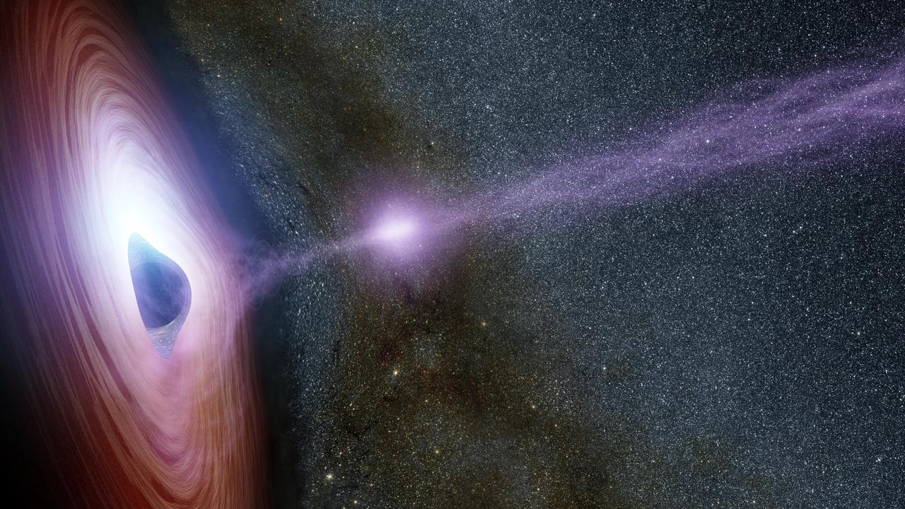
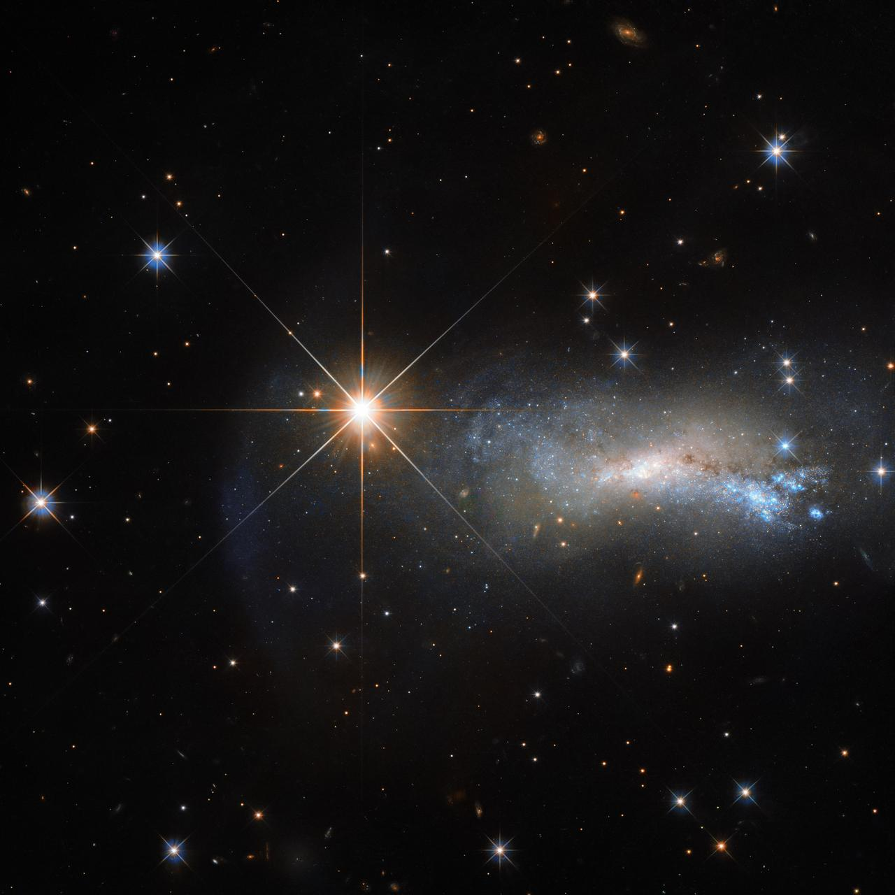

Karadelikler, çok büyük miktarda maddenin çok küçük bir alana sıkışmasıyla oluşan aşırı yoğun gök cisimleridir.
Kütleçekimleri o kadar güçlüdür ki olay ufkunun (event horizon) içinden ışık bile kaçamaz.
Olay ufku, karadeliğin çevresindeki bir sınır gibi düşünülebilir.
Karadeliğin içinde tam olarak ne olduğunu bilim insanları hâlâ araştırmaktadır.
Bazı karadeliklerin çevresinde çok sıcak gazlardan oluşan birikim diskleri (accretion disks) bulunabilir.
Ayrıca galaksimiz olan Samanyolu Galaksisi'nde de Sagittarius A* adlı süper kütleli bir karadelik bulunur.
Karadelikler, genel olarak farklı özelliklere göre sınıflandırır.
En çok bahsedilen türler ise yıldız kütleli karadelikler, orta kütleli karadelikler ve süper kütleli karadeliklerdir.

Görsel: NASAYıldızlar, çoğunlukla hidrojen ve helyumdan oluşan dev sıcak gaz küreleridir.
Yıldızların yaşamı şöyle ilerler:
İlk olarak yıldızlar büyük gaz ve toz bulutlarının içinde oluşur.
Bu bulutlara moleküler bulutlar denir. Daha sonra kütleçekimi, gaz ve tozu bir araya toplar.
Madde sıkıştıkça ısınır ve böylece genç bir yıldız olan protostar oluşur.
Ardından çekirdekte hidrojen atomlarının birleşerek helyum oluşturduğu nükleer füzyon başlar.
Bu füzyon enerji üretir ve yıldızın yaşamının en uzun olduğu evre de bu evredir.
Daha sonrasında yaşlanma evresi başlar. Çekirdekteki hidrojen azaldığında yıldızın yapısı değişmeye başlar.
Yıldız genişleyerek dev yıldız aşamalarına ilerleyebilir. Son aşama olan evrede ise yıldızın sonu büyük ölçüde kütlesine bağlıdır.
Düşük kütleli yıldızlar farklı bir şekilde yaşlanıp son aşamalarına ulaşır.
Çok büyük kütleli yıldızlar ise çok daha kısa yaşar ve yaşamlarının sonunda süpernova gibi büyük olaylar yaşayabilir ve büyük kütleli yıldızların kalıntıları nötron yıldızı veya karadelik oluşturabilir.

Görsel: NASA